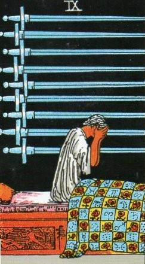
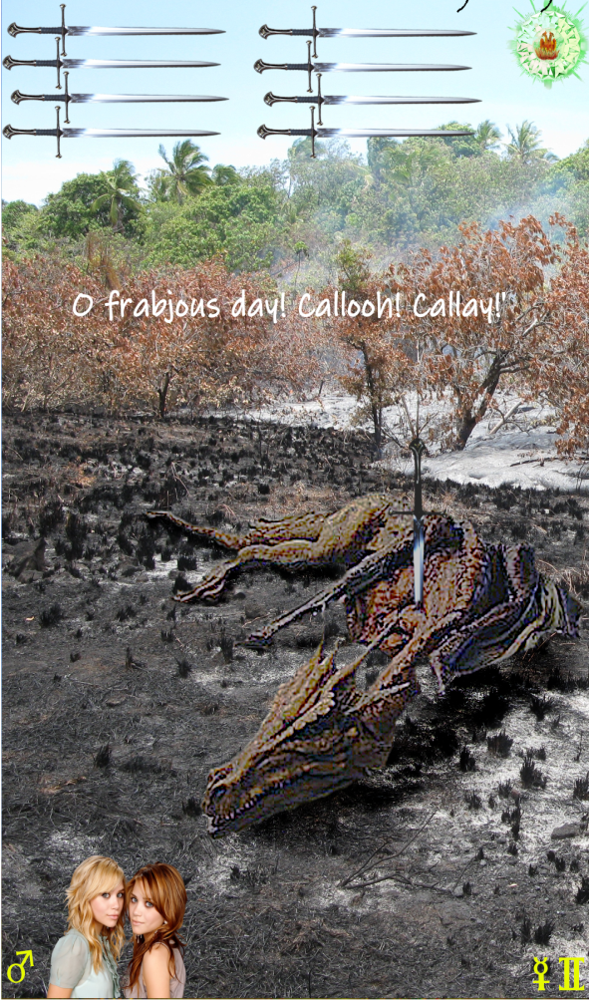
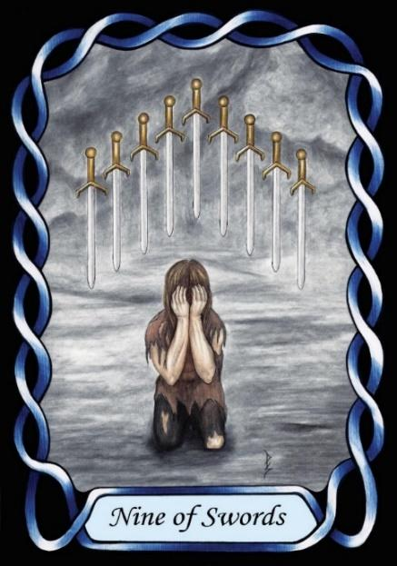

Nine of Swords



Sign |
|
Third – Communicate |
|
Sign Ruler |
|
Element |
Air: interaction |
Modality |
|
Symbol |
Twins |
Decan |
|
Decan Ruler |
|
Time |
Jun 1 – 10 |
New Language Gemini II
The Journeyman applies communication, but being influenced by both Mercury and Mars, who in Vedic astrology are antagonistic towards one another, the communication is not well aspected. Mars is a fighter, not a talker, so communication quality can be both poor and aggressive. By contrast, Mercury is all about persuasion rather than violence. The combination is unlikely to be a happy one.
The poem Jaberwocky captures both concepts of New Language, action, and martial violence. A distinguishing trait of denizens of this decan is a tendency to use made-up words or nick-names for people and things. Upright this is also a card of direct and physical action.
Goldschneider Personology
Gemini-twos face difficulties in communication, which can lead to deep lifelong frustration. They tend to invent their own words and language, often assigning nick-names to people and things. It would appear that Mars is not particularly focussed on communication. The martial influence can manifest in a deep-seated anger towards those who oppose them, and also in a desire for direct action.
RWS Imagery:
A woman weeps in bed alone with her stress and frustration. On the side of the bed appears to be a martial scene, reflecting the rulership of Mars over this decan, in that one figure in classic fencing lunge pose stabs another, who falls back as a result. The overall message is that the influence of Mars brings misery and suffering.
The bedspread is decorated with astrological symbols, which seem to recommend that the true meaning of the card lies in its astrology with Mars as ruler.
The suffering woman also represents the nature of Gemini. Consider the legend of Castor and Pollux, twins punished by being separated and unable to communicate with each other, as a contrast to the natural easy communication between twins. Twins often even develop their own language in early childhood, and this corresponds well with Goldschneider’s description.
Summary
Communication struggles arise from Mercury-Mars tension, leading to frustration, aggression, and direct action.